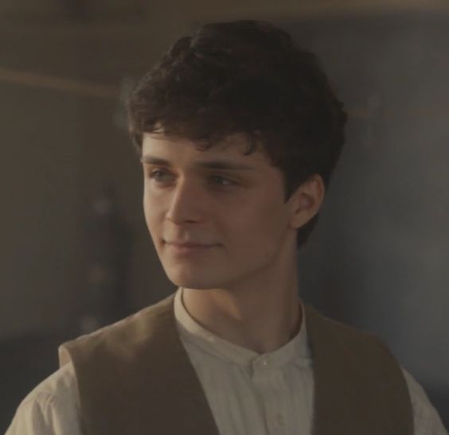

| Characters | Introduction | First Appearance | |
| Anne Shirley-Cuthbert | Anne Shirley-Cuthbert, previously Anne Shirley, is an orphan adopted by the Cuthbert siblings. She likes reading and writing, and is best friends with Diana Barry, Ruby Gillis, and a few other students from her school, Avonlea school. Once she has graduated, she goes to Queen's College after passing the exams with her friends. | Season 1, Episode 1: Your Will Shall Decide Your Destiny | |
| Marilla Cuthbert | Marilla Cuthbert is an old woman who, along with her little brother Matthew, decided to adopt Anne even though they asked for a boy from the orphanage. She originally did not want to let Anne stay, but she let her stay a week. After an incident, she lets Anne stay permanently, telling Matthew that she'll take primary care of Anne. | Season 1, Episode 1: Your Will Shall Decide Your Destiny | |
| Matthew Cuthbert | Matthew Cuthbert is Marilla's younger brother who picks up Anne from the station and brings her back to Green gables, his and Marilla's family home. He was against his sister's decision to send Anne back, and tries to persuade her to let Anne stay. Eventually, Anne stays and he is satisfied with Marilla's change of heart. | Season 1, Episode 1: Your Will Shall Decide Your Destiny | |
| Diana Barry | Diana Barry is the daughter of Mr. and Mrs. Barry, and is Anne's first friend (kindred spirit) at Avonlea. She befriended Anne after her mother invited the Cuthberts to tea so they can meet Anne. She has a short romance with the Cuthbert's farm boy, Jerry, and she and Anne fight because of it - but they resolve it soon after. | Season 1, Episode 1: Your Will Shall Decide Your Destiny | |
|  | Gilbert Blythe | Gilbert Blythe is Anne's fellow classmate/academic rival, and eventual love interest. Anne meets him on the way to school, just as he's come back from Alberta with his sick father, and he leaves a bad impression on her. After his father's death, he works on a steamboat, meets a man named Sebastian (Bash), who lives with him when they're back. | Season 1, Episode 2: But What Is So Headstrong as Youth? |